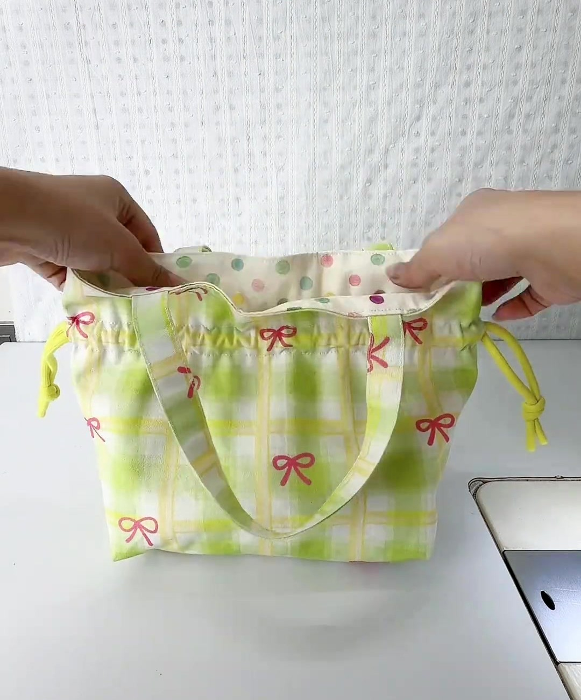
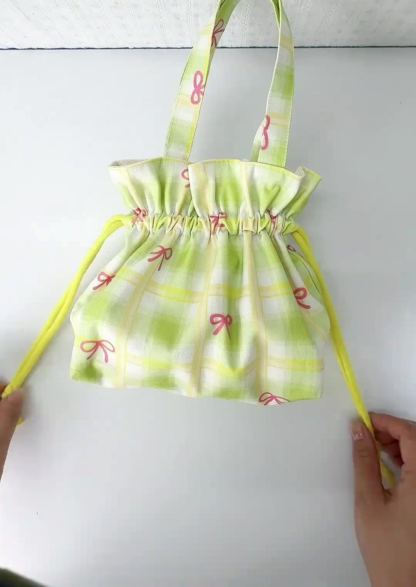

Video 0:01
Video 0:01
Thành phẩm trong video: rút dây là miệng túi nhún bèo, quai xách nhỏ xinh.

Video 0:02Nới dây ra: bên trong là lót chấm bi, hai bên có 2 nút dây vàng chanh.

Video 0:55Kéo 2 dây về 2 phía là miệng rút kín. Túi đựng khoảng 3,2 lít: khăn giấy, son, sạc, ví nhỏ.
18 × 10 × 18 cm
thành phẩm: dài đáy × sâu đáy × cao
56 cm
vòng miệng túi
~1 giờ 45 phút
thời gian may (người mới)
Người mới
độ khó: chỉ cần mũi may thẳng
5 con số vàng trong video — nhớ 5 con số này là cắt và gắn quai đúng như video
30 × 25 cm
thân túi: rộng × cao
(cắt 2 ngoài + 2 lót)
▸ Video 0:05
(cắt 2 ngoài + 2 lót)
5 × 5 cm
ô khoét bỏ ở
2 góc đáy
▸ Video 0:05
2 góc đáy
5 cm + 2 cm
2 vạch cách mép trên
5 cm và 7 cm
▸ Video 0:05
5 cm và 7 cm
30 × 8 cm
dải quai (cắt 2),
gấp còn rộng 2 cm
▸ Video 0:05
gấp còn rộng 2 cm
6 | 6 cm
mốc quai: đo từ tâm
mép trên ra mỗi bên
▸ Video 0:24
mép trên ra mỗi bên
3 chỗ bản cũ phía sau viết chưa đúng — hãy làm theo trang này
Quai
gấp 3, rộng 2,6–2,7 cm
Đúng: gấp 2 mép vào giữa rồi gập đôi → rộng 2 cm, dày 4 lớp.
Đường diễu
chỉ 2 đường
Đúng: 3 đường — 1 may mí sát miệng + 2 3 tạo kênh dây.
Vị trí chân quai
mốc 6 cm là tâm chân quai
Đúng: mép trong chân quai chạm mốc 6 cm, quai nằm phía ngoài mốc.